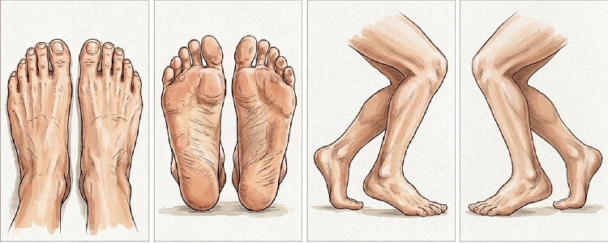

Detayları görmek için sol taraftan bir hasta seçin.
-
-
Laboratuvar
Sınıflama (Wagner)
Yara Özellikleri
Tedavi Özgeçmişi
AKİ
Kültür / Antibiyotik
Görüntüleme Bulguları
Tedavi Planı
Marker Ekle
Boyut
Renk

0/0
-
Tarihe Göre Değerlendirmeler
Henüz bir değerlendirme notu girilmedi.
Laboratuvar
Sınıflama (Wagner Sınıflandırması)
Yara Özellikleri
Tedavi Özgeçmişi
Ayak Bileği Kol İndeksi (AKİ)
Kültür / Antibiyotik Tedavi
Görüntüleme Bulguları
Planlanan Tetkik ve Tedavi
Henüz geliş kaydı yok.
Henüz fotoğraf eklenmedi.
Hasta Hesapla Sonuçları
Hasta Bazında Gelişler
Debridman İstatistikleri
Hasta Ad Soyad, Tarih / Saatler
Antibiyotik İstatistikleri
Tüm Hasta Fotoğrafları
Yükleniyor...
Not Ekle
Hazır Not Butonları Ayarları
Bu başlık için henüz hazır not butonu eklenmedi.
Henüz antibiyotik eklenmedi.
Henüz seçenek eklenmedi.
Wagner Sınıflandırması — Evre Seç
Çekim Tarihi
-
Bu işaretlemeyi seçili fotoğraftaki mevcut işaretlemenin üzerine mi eklemek istiyorsunuz, yoksa yeni bir işaretleme (yeni fotoğraf) mi oluşturmak istiyorsunuz?
Yeni Hasta Kaydı
Başlatılacak İşlemi Seçiniz
Seçtiğiniz işlem mevcut hasta için ayrı bir takip kaydı olarak oluşturulacaktır.
Debridman Kaydı Oluştur
Hasta:-
Kayıt oluşturulduğunda planlanan tetkik/tedavi alanına otomatik olarak “Hastaya yara yeri debridmanı yapıldı.” notu eklenir.
Antibiyotik Başlat
Hasta:-
Henüz antibiyotik seçilmedi.
Antibiyotik Bitiş Tarihini Güncelle
-
Tarihi elle seçebilirsin. Mevcut tarihten ileriye veya geriye çekebilirsin. Başlangıç tarihinden önce bir bitiş tarihi seçilemez.